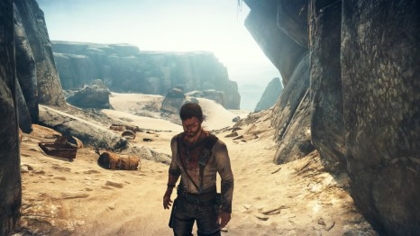

Atunci când am auzit că vom avea un joc Mad Max am crezut că va fi un joc mediocru, un titlu care nu va trece de 5 pe Metacritic, un Action Adventure plin de clișee și fără pic de suflet, menit strict pentru a mai strânge câțiva dolari de pe urma licenței de film, dar, din fericire, m-am înșelat.
Cei de la Warner Brothers Interactive Entertainment i-au însărcinat pe cei de la Avalanche Studios cu acest proiect și le-au dat și timpul necesar pentru finalizarea lui, fără să-i grabească prin stabilirea unei date de lansare simultane cu apariția filmului Mad Max Fury Road în cinematografe.
Recunosc că nu sunt un fan Mad Max și acest joc nici măcar nu se afla pe lista mea de titluri pentru care trebuia să fac review în acest început de toamnă, dar acum câteva zile m-am trezit cu jocul în brațe și am zis să-i dau o șansă fără idei preconcepute. Partea frumoasă este că, după două zile de joacă, am ajuns să mă bucur de această decizie. Mad Max, jocul, este chiar decent și, deși nu sunt fan al acestei serii și nici nu mă omor prea tare după Just Cause (serie de jocuri creată de Avalanche), am avut o experiență plăcută cu acest Open World. Așadar, am să-ți spun și ție câte ceva despre cum mi s-a părut, pentru a te ajuta să te decizi dacă vrei sau nu să acorzi o șansă acestui joc.

POVESTEA
Povestea din Mad Max nu impresionează mai deloc, fiind banală și uneori previzibilă. Max este un om care a trecut prin multe la viața lui. Acesta a suferit, a căzut și s-a ridicat de atâtea ori încât a rămas fără simțul umorului, fără dorința de a face bine altcuiva și a dezvoltat o latură sarcastică și ironică foarte greu de suportat. Cred că de la Kratos din God of War nu am mai întâlnit un personaj atât de supărat pe viață, dar Max, ca și spartanul mai sus menționat, are motivele lui să fie așa și nu avem noi de ce să-l judecăm prea aspru. Firul narativ urmărește dorința de răzbunare a personajului principal, Max Nebunu’ și cum acesta distruge tot ce-i stă în cale pentru a-și atinge scopul.

Mai multe nu vreau să vă spun despre poveste, nu că ar fi cine știe ce spoilere de făcut, dar pur și simplu, Max străbate deșertul în lung și în lat în mașina lui pentru a se răzbuna pe un personaj negativ prezentat pe scurt, dar cu aplomb, la începutul jocului. Misiunile care ne tot împing înainte au obiective care sunt banale: mergi acolo, omoară-l pe inamicul acela, mergi în altă parte, puțină bătălie cu mașina și tot așa. Din fericire, pe cât de plictisitor sună, pe atât de distractiv este în practică.
GAMEPLAY
Mecanicile de joc din Mad Max sunt foarte complexe și bine puse la punct. În primul rând, îl avem pe Max Nebunu’ care trebuie să bea apă de fiecare dată când este rănit și să caute de mâncare pentru a supraviețui în deșertul numit The Big White. Pe lângă aceste resurse el va aduna scrap, un fel de fier vechi care este și moneda jocului, pentru a upgrada mașina numită The Magnum Opus și pentru a-și dezvolta diferitele abilități speciale. Automobilul va avea nevoie constantă de benzină, motorină sau pe ce combustibil funcționează aceasta, astfel Max va fi obligat să caute permanent butoaie prin zonele populate. Din fericire, după ce facem plinul, putem lua un butoi cu noi, ca provizie, asta dacă nu ne hotărâm să-l aruncăm asupra inamicilor, detonându-l pentru a-i distruge într-o explozie de zile mari.
Cei de la Avalanche Studios au împrumutat multe mecanici de joc din Just Cause, una dintre acestea fiind harponul. Max se va folosi de acesta pentru a naviga anumite locații și chiar și în combat. Dacă tot am deschis discuția despre lupte, Mad Max folosește rețeta de lupte corp la corp făcută celebră de seria Batman Arkham, îmbinând CQC (Close Quarter Combat) cu diferite combo-uri și utilizând câteva scheme de execuție extrem de brutale și sângeroase. Max are și o puscă, dar o folosește extrem de rar.
The Magnum Opus, mașina lui Max este indispensabilă, trebuie reparată și upgradată mereu și indiferent ce alte mașini mai găsești prin deșert, te vei întoarce tot la ea. Pe tot parcursul aventurii, suntem însoțiți de un personaj care-l ține de mână pe Max de la începutul jocului, explicându-i toate mecanicile de gameplay și ajutându-l permanent, de parcă Max a trăit în altă lume și nu știe ce trebuie să facă în The Big White. Inamicii sunt foarte inteligenți, se ascund, te atacă cu îndârjire și te vor omorî destul de des, dacă nu ai cu tine apă pentru a te revigora.
Ca aspecte negative, vreau să menționez schema de control greoaie și câteva misiuni frustrante, printre care faptul că la începutul jocului ești forțat să pierzi ore bune adunând scrap pentru a upgrada mașina până la un anumit nivel.
GRAFICĂ
Mad Max este un Action Adventure reușit devenind extrem de distractiv imediat cum se termină cinematicul de introducere, care la rândul său este plin de acțiune intensă.
Avalanche Studios a capturat foarte bine universul acesta dezolant și lipsit de viață. Dacă în alte jocuri ne așteptăm să vedem cât de vie pare lumea care ne înconjoară, în Mad Max vom fi tot timpul într-un deșert arid, plin de nisipuri mișcătoare și furtuni, iar atunci când se lasă seara putem observa schimbările de temperatură prin intermediul unor efecte vizuale reușite. Exploziile și focul sunt realizate cu atenție maximă, iar cerul din joc, care se află într-o continuă schimbare, este picătura de culoare și de viață, care parcă te face să speri că poate mâine o să fie o zi mai bună în acest univers uitat de timp. Mad Max suferă din când în când de scăderi de frame rate și de texturi care se încarcă cam greu, dar nu atât de rău încât să nu fie jucabil.
Pe partea de sunet, jocul se prezintă ok, nimic fenomenal, dar nici nu sunt probleme sau aspecte care să te deconecteze de la atmosferă. Voice acting-ul este și el decent, actorii își fac datoria așa cum trebuie, dar cu siguranță nimeni nu se așteapta ca Mad Max să fie un joc plin de dialoguri revelatoare despre nemurirea sufletului… Coloana sonoră mi-a atras atenția pentru un minut la începutul jocului, apoi a dispărut în deșertul uitat și s-a pierdut printre furtunile de nisip.
CONCLUZIE
Mad Max este un joc bun, distractiv, care cu siguranță ar însemna mult mai mult pentru mine dacă aș fi un fan al acestui univers. Povestea este acolo, deși nu m-a impresionat cu nimic. Din fericire, prezentarea grafică și cea audio sunt ok, iar diversitatea și complexitatea mecanicilor de joc salvează acest titlu și-i dau șansa de a ieși din anonimat, ridicandu-l peste restul mediocrităților lansate în ultimii ani.